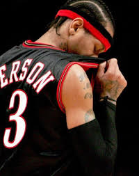

艾佛森出生在弗吉尼亞州的漢普頓，母親安·艾佛森是一個年僅15歲的單親媽媽，在他的父親艾倫·布勞頓離開她之後給與了艾倫母親的娘家姓。他成長在漢普頓充斥著毒品與犯罪的地區。在童年時期，鄰居的孩子們都喜歡他，並賦予了艾佛森「Bubba Chuck」的綽號。童年時代的朋友Jaime Rogers說，艾佛森總是會關注年幼的孩子，「他總是帶著大家。」在他13歲的時候，他的父親Michael Freeman在他面前因持有毒品而被捕。艾佛森因為曠課而沒有完成八年級的學業，並且離開了該地區。
中學時期，他曾加入美式足球校隊擔任四分衛，該校隊曾贏取維吉尼亞州冠軍賽。
